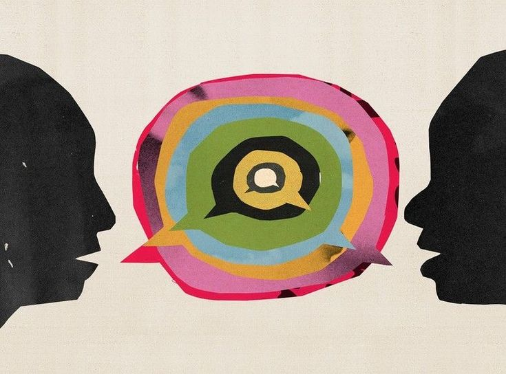

Explore os simuladores que demonstram os conceitos de frequência e comunicação inspirados na invenção de Hedy Lamarr.
Demonstra a alternância sincronizada entre dois rádios em nove canais, dentro da faixa de 80 a 160 MHz, com velocidade de dois saltos por segundo. A simulação permite visualizar as mudanças de frequência e compreender o funcionamento do sistema Frequency Hopping.

Apresenta a transmissão de informações em quatro canais, simulando interferências e a consequente perda de mensagens. Através dos resultados, é possível observar como as interferências afetam a comunicação e comparar o desempenho dos diferentes canais.